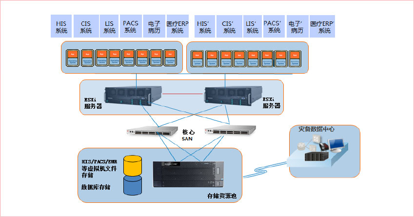
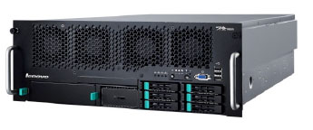
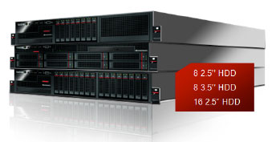
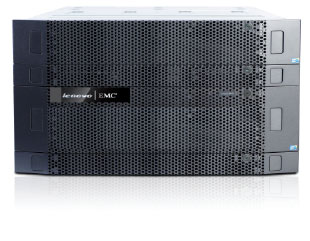
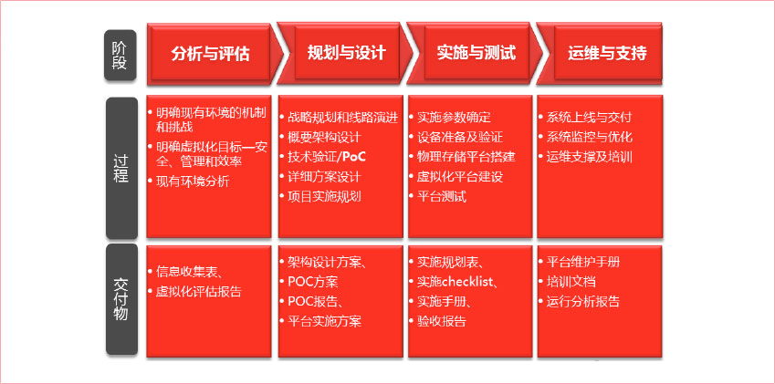

方案分析
某医院正在计划实施服务器整合项目，整合后的应用大约有10个左右，其中有6个左右的数据库类应用，以及4个左右的Windows/Linux应用。如果按照传统的应用部署方式，一个应用一台服务器的话，需要部署10台服务器，如此数量的服务器，将会造成如下的众多问题：
- 成本高
硬件成本较高。运营和维护成本高，包括数据中心空间、机柜、网线，耗电量，冷气空调和人力成本等。
- 可用性
可用性低，因为每个服务器都是单机，如果都配置为双机模式成本更高。系统维护和升级或者扩容时候需要停机进行，造成应用中断。
- 缺乏可管理性
数量太多难以管理，新服务器和应用的部署时间长，大大降低服务器重建和应用加载时间。硬件维护需要数天/周的变更管理准备和数小时的维护窗口。
- 兼容性差
系统和应用迁移到新的硬件需要和旧系统兼容的系统。
为了更好的解决上述传统单一物理服务器部署应用方式所造成的弊端，我们建议客户可以建设一个虚拟化数据中心，该方案将极大的提供服务器整合的效率，大幅度简化了服务器集群管理的复杂性，提高了整体系统的可用性，同时还明显的减少了投资成本，具有很好的技术领先性和性价比，虚拟化技术由于采用了将传统服务器应用程序环境封装成可移动的档案文件的技术，很容易实现业务的连续不间断运行，针对应用和访问量灵活部署，降低系统总成本。
联想医疗虚拟化解决方案
方案整体架构
利用服务器虚拟化和桌面虚拟化技术，提供端到端的整体解决方案，包括终端设备和数据中心，方案整体架构如下：

方案组成部分
I. 软件组成
联想采用业界最优秀的虚拟化解决方案，组成联想服务器虚拟化解决方案，根据客户不同需求，选择最合适的服务器虚拟化及桌面虚拟化方案。
VMware vSphere™ 是业内第一个云操作系统，它充分利用虚拟化功能来转换数据中心，从而大幅度简化了云计算基础结构。借助 VM -ware vSphere，IT 组织可以通过内外部资源，安全而低风险地交付灵活可靠的新一代 IT 服务。
VMware vSphere 以 VMware Infrastructure 平台成熟的强大功能为依托，用户超过 130,000 人，极大地降低了资金和运营成本，并增强了对交付 IT 服务的掌控力，同时保持了一贯的灵活性，可以选择任何类型的操作系统、应用程序和硬件。
- VMware vSphere 包括下列组件和功能
- VMware ESXi
在物理服务器上运行的虚拟化层，它将处理器、内存、存储器和资源虚拟化为多个虚拟机
- VMware vCenter Server
配置和管理虚拟化的管理点。它提供基本的数据中心服务，如访问控制、性能监控等功能
- VMware vSphere Client
允许用户从任何 Windows PC 远程连接到 vCenter Server 或 ESXi 的界面
- 允许用户从任何 Windows PC 远程连接到 vCenter Server 或 ESXi 的界面
允许用户从各种 Web 浏览器和操作系统远程连接到 vCenter Server 的 Web 界面
- vSphere 虚拟机文件系统 (VMFS)
针对 ESXi 虚拟机的高性能群集文件系统
- VMware vSphere 包括下列功能
- vSphere Virtual SMP
可使单一的虚拟机同时使用多个物理处理器。
- vSphere vMotion
可以将打开电源的虚拟机从一台物理服务器迁移到另一台物理服务器。但不能将虚拟机从一个数据中心移至另一个数据中心。
- vSphere Storage vMotion
通过Storage vMotion迁移的功能，能够在虚拟机运行时将虚拟机的虚拟磁盘或配置文件移动到新数据存储。通过Storage vMotion迁移，可以在不中断虚拟机可用性的情况下，移动虚拟机的存储器。
- vSphere High Availability (HA)
可为虚拟机提供高可用性的功能。如果服务器出现故障，受到影响的虚拟机会在其他拥有多余容量的可用服务器上重新启动。
- vSphere Distributed Resource Scheduler (DRS)
通过为虚拟机收集硬件资源，动态分配和平衡计算容量。可显著减少数据中心功耗。
- vSphere 存储 DRS
在数据存储集合之间动态分配和平衡存储容量和 I/O。该功能包括管理功能，将降低虚拟机性能的空间不足风险和 I/O 瓶颈风险降到最低。
- vSphere Fault Tolerance
通过使用副本保护虚拟机，可以提供连续可用性。为虚拟机启用此功能后，即会创建原始或主虚拟机的辅助副本。如果主虚拟机不可用， 则辅助虚拟机将立即成为活动虚拟机。
- vSphere Distributed Switch (VDS)
虚拟交换机可以跨多个 ESXi 主机，使当前网络维护活动显著减少并提高网络容量。效率获得提升，可使虚拟机在跨多个主机进行迁移时确保其网络配置保持一致。
II. 硬件组成
在业界优秀解决方案的基础上，联想提供丰富多样的自有品牌的硬件设备来支撑服务器虚拟化平台。包括数据中心包括专业的企业级服务器和存储产品，如联想ThinkServer服务器以及Lenovo-EMC的磁盘阵列柜产品。
联想R680 G7服务器
- 
-
应用领域：
联想R680 G7服务器是专为IT关键应用环境设计的四路机架服务器，聚集众多创新 技术，保障企业IT核心应用高效、可靠的运行。
- 大中型数据库服务器（如财务管理、用户信息数据库、报表统计综合查询系统等）
- 关键业务系统（如：ERP、CRM等）
- 多应用整合等虚拟化应用
产品介绍：
无以比拟的超强性能：相比上代产品数据库性能提升3倍，虚拟化性能提升3.7倍
- 采用全新英特尔®QPI快速通道互联架构
- 英特尔®至强®7500（E7-4800）全新系列处理器
- 高达8倍带宽的全新内存子系统
- 72条 PCIe Gen2通道的全新I/O子系统
全方位的高可靠设计：多种创新技术保证业务7*24小时稳定运行
- 支持20多项全新芯片级可靠性特性。如下移大型机技术，支持MCA功能，可检测并修复CPU，芯片组，内存等硬件中的致命错误，提高可用性。
- 采用2+2双重保护设计、电源转换效率高达92%的高效能电源，任意2个电源故障都不会影响系统运行；同时降低系统发热量，增强服务器的可靠性。
- 联想独有的上下两层散热设计，独立风道、直送风的散热系统，散热更高效，保证了系统的安全。
- 内存、硬盘、电源、风扇、I/O等部件全冗余热插拔，一旦出现故障，可不宕机换件。
- 通过一目了然的远程可视化操作，可从任何地方随时管理和控制服务器，快速排除服务器故障。
绿色环保，更低功耗：节能减排，降低TCO
- 电源转换效率高达92%,三年单台比普通电源节电16500度,为社会节约大量能源的同时，帮助企业大幅节省电费开支。
- 标配慧眼功率管理，在同样机房环境，可多支持40%同配设备，提高机房利用率。
- 提供功率评估工具，帮助用户根据具体配置需求，精确评估最大功率，按需配置电源，按需规划机房的UPS、制冷、发电机系统。
强大的扩展能力：保障业务快速发展
- 支持高达1TB的内存容量
- 标配4个具备IOAT2/VT/VMDQ技术的高性能千兆网卡
- 提供11个I/O扩展槽
满足关键业务、虚拟化对大内存、高I/O扩展、安全、性能的多重需求，同时预留足够扩展空间。
便于使用，简化管理：简化系统运维、降低系统风险
- 支持批量集中监控：通过标配慧眼软件，在同一界面可同时监控多台服务器。
- 支持批量部署：支持RAID配置、操作系统的复制安装方式，简单同时极大降低工作量。
- 管理员可将本地控制台的光驱定向到远端服务器，及时为远端设备升级软件。
- 即便远端服务器关机，只要电源处于供电状态，管理员都可以随时接管服务器，对服务器进行访问和管理。
- 管理网段与生产系统隔离，互不影响。
- 
-
联想ThinkServer RD640服务器
概述：
- 高品质特性的联想RD640服务器，是为了降低企业IT基础设施能源消耗，同时保持企业应用高效运营而打造的，稳定承载关键业务应用的两路机架式服务器。
- SpecPower是业界一项用于评测服务器整体系统级性能功耗比的标准测试工具。联想RD640服务器，凭借业界一流的SpecPower成绩，以及软硬结合的能效管理系统，将成为企业IT基础设施能效优化的有力功臣，大幅节省电能消耗。
- 联想RD640服务器，搭载两颗 Intel® 最新 Romley平台的Xeon® E5-2600 v2 系列高端两路处理器，最高可达16颗处理核心。20 DIMM高达640GB内存，最大24TB的存储容量，以及按需可选8盘、16盘3.5寸和2.5寸硬盘的灵活性，可满足企业关键应用对于系统性能的苛刻要求。
- 联想RD640服务器提供了完善的软件系统：EasyStartup帮您快速部署；EasyManage使您随时随地全面掌控系统；EasyUpgrade实现固件便捷升级；SmartGrid以数据中心级能效管控之力，助您节能降耗。
- 联想RD640服务器之稳，主要来源于三点：一，延承Think基因的高品质；二，聚三地之智，精益求精的系统设计；三，执着于高品质零部件与材料。
- 
-
Lenovo | EMC VNX 5400服务器
具备出众性价比的中端统一存储系统
应用领域：
- 政府：地市级政府部门的信息系统核心存储设备
- 教育：普教、职教的核心存储设备，科研院所、高校院系的基础存储设备
- 企业：中小型企业的核心存储设备，支持ERP、MRP、CRM、OA等应用
- 医疗：地市级城市三甲医院的核心应用，一线城市二甲医院的核心应用
- 其它：金融、证券行业的边缘存储设备
集成于电信设备制造商的各类方案中（如短信网关，NGN系统等）
Lenovo|EMC VNX5400 是Lenovo和EMC公司强强联手针对中国用户开发设计的一款出众性价比的统一存储平台，整合了原有的数据块存储、文件服务器和直连应用程序存储，使客户可以动态增加、共享和经济高效地管理多协议文件系统以及多协议数据块存储访问。并支持Microsoft Windows® 和Linux/UNIX 客户端在多协议（NFS 和CIFS）环境中共享文件。同时，它还支持高带宽和对延迟敏感的数据块应用程序的iSCSI、光纤通道和FCoE 访问。EMC Atmos ™ Virtual Edition软件和VNX 存储结合使用，可支持基于对象的存储，并使客户能够通过 Unisphere 管理 Web 应用程序。Lenovo|EMC VNX5400产品不但提供卓越的性能，还支持非常丰富的功能，使其成为中端存储用户的优选产品。通过将各个信息孤岛上的数据统一存储到VNX5400产品上，可以提高设备的使用效率，减少浪费，最大化地保护用户的投资；VNX5400的易用、高效及节能等特性都进一步降低了用户的使用成本。
- 硬件—VNX 5400采用 Intel 的最新处理器技术，为用户提供了有助于满足未来发展变化需要的可用性、可扩展性功能。模块化的硬件设计、镜像缓存的系统设计、消除单点故障的1+1硬件冗余设计，高达99.9995%的可靠性标准，一切都为用户业务的连续性及数据的高可靠性完美打造。
- 6 Gb/s 串行连接 SCSI (SAS) 驱动器和存储模块—采用最新 MiniSAS 接口，并行的SAS多端口传输，让客户得到无以伦比的高速性能体验，还提供简单的容量扩展、企业级性能和端到端数据完整性功能。
- 多种硬盘的支持—VNX 5400支持3.5寸7.2K/10K/15K, 2.5寸10K多种硬盘，为用户提供了丰富的解决方案，能够满足不同客户的不同业务需求，还支持对包括虚拟桌面在内的性能密集型应用类型使用的闪存。
- 绿色、环保– 2.5寸10K硬盘的使用，在能获得3.5寸15K硬盘相同的性能前提下，为客户节省能源消耗。
- 整合：作为一个统一的存储产品VNX5400消除了独立的存储，允许应用服务器的存储整合。并让用户结构化、非结构化数据以及对象存储在同一个存储平台运行成为可能。满足了绝大多数中端存储用户的需求。
- 简易的管理： Unisphere软件提供了一个易于使用的，全面的管理工具，可让用户管理，发现，监控和配置VNX5400，支持自动化工具包括向导，从而降低了存储管理所需的繁琐步骤。
- 内置功能来提高利用率和降低总成本：VNX5400提供先进的内置容量优化功能，如压缩，重复数据删除的文件系统，自动化卷管理和虚拟资源调配，使您可以节省存储空间。
- 闪存优化：VNX5400的使用提高了缓存的扩展和高性能的存储池闪存硬盘的性能。
- 虚拟化就绪：VNX5400支持所有不同的协议，以保证将VMware，微软HyperV和Xen环境中成功部署。另外，通过UnisphereVAAI（用于集成的vStorage API阵列）与VMware vCenter的集成来提供了两种存储，整个环境和服务器管理员的从终端到终端的可见度。
- 数据的保护：VNX5400提供了信息保护软件。例如，复制功能有point-in-time的即时恢复功能，快照，克隆和自动恢复来保护，以及遵守保护政策的能监测和预警。
- 可扩展性：VNX5400为模板化设计能随你的数据增长来付费。根据你所需的文件量和模块量来随时添加X-blade和存储处理器。
- 自动分层：独特的FLASH 1st策略可以将“热”数据自动放到高性能磁盘和缓存中，已最小的管理代价提高应用的性能。
III. 专业服务
在整个方案服务的生命周期中，从如下四个阶段提供专业的服务，确保为服务器虚拟化及桌面虚拟化解决方案提供一站式全程专业服务。
